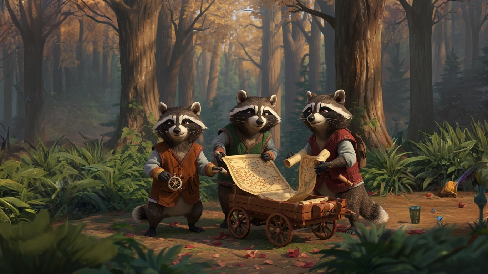
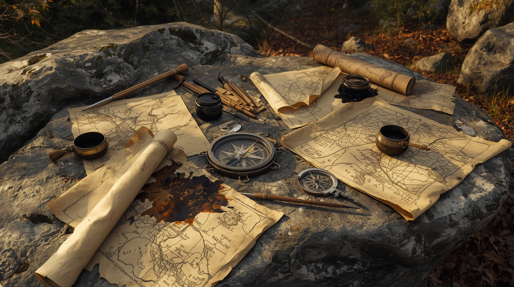
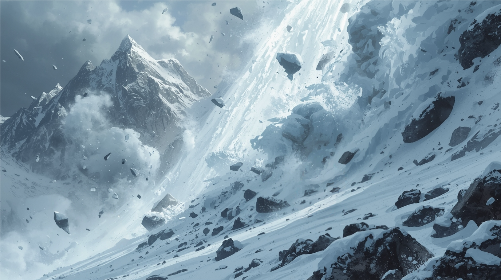
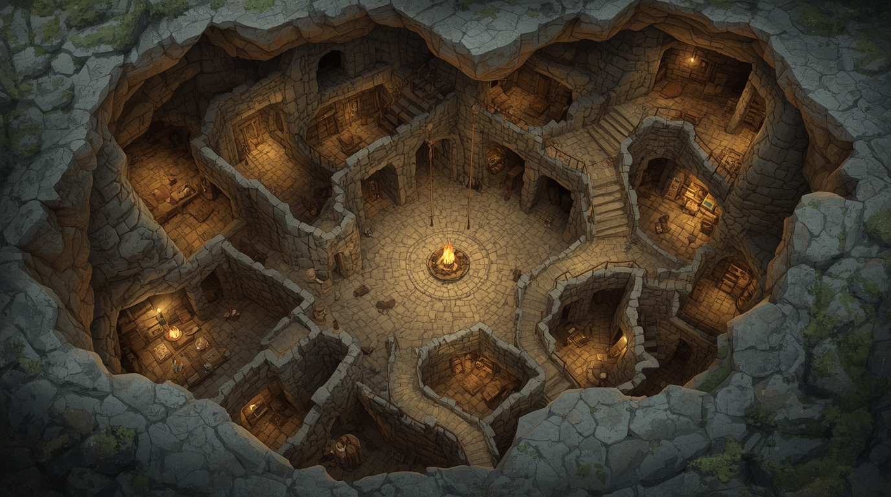

La primera prueba de su nueva alianza había llegado más pronto de lo esperado.
Un grupo de tres mapaches bloqueaba el sendero, vestidos como exploradores con chalecos de cuero y camisas de lino. Tenían extendido un mapa antiguo sobre una pequeña carreta de madera con ruedas, mientras uno de ellos sostenía una brújula dorada y otro portaba un pergamino enrollado. El bosque otoñal los rodeaba con sus árboles majestuosos y hojas doradas.

—¡Saludos, estimados viajeros!—
exclamó Rigoberto Rinconada, inflando el pecho con autoridad cómica. Auto-proclamado Director Ejecutivo de Mapaches Cartógrafos Asociados.
—Por orden del Consejo de Mapaches Mercantes—
agitó un pergamino que parecía haber sido escrito con zumo de bayas
—ofrecemos los mapas más actualizados de toda la región: solo dos monedas de plata por el mejor mapa del valle.
Sus dos compañeros, Ruperto y Reinaldo, asintieron vigorosamente, aunque claramente no había ningún —Consejo— oficial. Rigoberto mantenía un— Registro Oficial de Transacciones— que consultaba con frecuencia, anotando cosas como— Día 12: Inventario actual: 4 manzanas. Vendimos 2. Compramos 3 más. Total actual: Miércoles— en una caligrafía que sugería serios problemas con las matemáticas básicas.
—Además—
añadió Rigoberto, inflando el pecho con orgullo
—ofrecemos servicios premium: guía local, mapa actualizado, y nuestro famoso 'Paquete de Supervivencia Montañosa'.—
Señaló hacia una caja de madera donde una manzana mordida y un pedazo de queso envuelto en una servilleta con iniciales ajenas sugerían fuertemente un modelo de negocio basado en —encontrar— provisiones abandonadas.
—Ruperto, lee nuestros testimoniales de clientes satisfechos.
Ruperto desplegó el pergamino:
—Don Anónimo comenta: 'Experiencia muy.... educativa. Aprendí mucho sobre mis propios límites.' Doña Anónima Número 2 testifica: 'El servicio fue bastante.... memorable. Ciertamente obtuve exactamente lo que pagué.' Y mi favorito personal—
hizo una pausa dramática
—Cliente Distinguido escribe: 'Definitivamente auténtico. No hay nada igual en el mercado, y probablemente sea mejor así.'—
Los tres mapaches irradiaban orgullo, completamente ciegos al hecho de que cada testimonial sonaba como alguien tratando desesperadamente de encontrar algo positivo que decir después de una experiencia traumática.
—Un mapa actualizado podría ser útil—
susurró Seraphina, sus antenas moviéndose inquietas mientras evaluaba a los tres mercaderes improvisados.
—Perfecto, tengo exactamente dos monedas— dijo Axel, sacando las monedas de plata de su bolsa. —Necesitamos un mapa confiable para llegar al Valle de los Susurradores.
Rigoberto sonrió ampliamente, sus ojos brillando con satisfacción comercial mientras recibía las monedas y las examinaba como un experto... aunque claramente no tenía idea de qué debía buscar exactamente.
—¡Excelente transacción!—
asintió Rigoberto con orgullo.
—Nuestro mejor mapa, recién actualizado esta semana—
Desplegó un mapa detallado del valle, marcado con rutas principales y algunos senderos alternos.
Axel examinó el mapa y se dio cuenta de que incluía información valiosa sobre rutas que no conocía. Una compra justa por sus dos monedas.
—Como bonificación de la compra—
añadió Rigoberto
—cuídense de los lobos por la noche. Andan más hambrientos de lo normal esta temporada. Y....
Axel se tensó. Los lobos de montaña no compartían la dieta pacífica del resto del reino. Eran los únicos que habían elegido seguir cazando, y esa elección los había convertido en algo que el resto de las criaturas prefería no mencionar en voz alta.
Rigoberto hizo una pausa, evaluando cuánta información adicional ofrecer gratuitamente.
—Ah, y otra cosa—
su voz bajó a un susurro, los ojos entornados.
—Si van al Valle de los Susurradores buscando lo que creo que buscan.... tengan cuidado. Un viajero pasó hace dos lunas preguntando por las Lágrimas de Luna. Dijo que el Templo donde se guardan solo se revela a quienes no lo buscan. Que los que van directo.... nunca llegan.
Axel miró a Seraphina. Ella había dicho que había pistas, un camino. Rigoberto decía que el camino directo no existía. Alguien estaba equivocado.
—¿Y qué fue de ese viajero?—
Rigoberto se encogió de hombros.
—Nunca volvió a pasar por aquí. Pero eso no significa nada. La mitad de nuestros clientes no repiten—
los otros dos mapaches asintieron con un entusiasmo que sugería que no veían el problema en esa estadística.
—Gracias por el mapa y los consejos—
dijo Axel.
—Que sus negocios prosperen.
—¡Los clientes satisfechos son nuestra mejor publicidad!—
declaró Rigoberto con una inclinación de cabeza.
Mientras se alejaban del puesto, Axel desplegó el mapa. A primera vista era detallado, mejor que cualquiera de los suyos. Pero algo le molestaba.
—Seraphina, mira esto.
Señaló una zona al sureste del Valle de los Susurradores. En el mapa de Rigoberto, el sendero se bifurcaba en tres rutas. En el mapa viejo de Axel, dibujado por su padre en piel de ciervo, esa misma zona mostraba solo una ruta — y era diferente a las tres.
—¿Cuatro versiones de un mismo camino?—
Seraphina se inclinó sobre ambos mapas, sus antenas moviéndose entre uno y otro.
—O tres caminos inventados para proteger el real—
murmuró. La observación era aguda. Los mapaches vendían información, pero eso no significaba que vendieran toda la información.
Axel plegó ambos mapas y los guardó por separado. Dos fuentes que se contradecían. Y lo que Rigoberto había dicho sobre el Templo que solo se revela a quienes no lo buscan.... eso tampoco cuadraba con las pistas de Seraphina.
Pero las dudas podían esperar. El sendero descendía entre formaciones rocosas cada vez más suaves, los pinos ralos dando paso a robles frondosos, y el aire perdiendo su filo de montaña.
Los mapaches habían sido solo el primer encuentro. El destino tenía preparadas más sorpresas en su camino hacia el Valle de los Susurradores.
Durante la mañana del tercer día, mientras descendían por un sendero empinado siguiendo la ruta marcada, Axel se detuvo al escuchar voces a la distancia. No parecían peligrosas, pero sí inesperadas.
—¿Escuchaste eso?—
murmuró a Seraphina, señalando hacia un claro entre los árboles donde podían distinguir movimiento.
Desde una cresta elevada pudieron divisar un pequeño claro donde una lince de pelaje rojizo con manchas blancas trabajaba completamente absorta. Se acercaron con cuidado por el sendero serpenteante y la encontraron con pergaminos extendidos sobre una roca plana, una brújula especial de metal brillante, y las puntas de sus garras manchadas de tinta. Murmuraba para sí misma mientras trazaba líneas precisas.

—El arroyo del este cambió su curso otra vez.... ¿o tal vez el mapa de la temporada pasada estaba equivocado desde el principio?—
La lince frunció el ceño, borrando una línea con la garra.
—Los mapaches dijeron tres días al norte, pero si el sendero se desvía aquí....
Axel carraspeó suavemente para anunciar su presencia, pero el sonido la sobresaltó tanto que tiró su tintero, manchando varios pergaminos.
—¡Por todas las montañas!—
Se enderezó rápidamente, evaluando a los recién llegados.
—¿De dónde salieron ustedes?
—Del sendero principal.... bueno, lo que queda de él después de los mapaches cobradores—
respondió Axel. Las palabras le salieron más rápido de lo normal.
—Eh.... sí, digo no, digo.... había un sendero hasta que encontramos el puesto de peaje.
La lince lo miró con la ceja levantada y la boca torcida en algo que no era del todo una sonrisa.
—¿Mapaches cobradores?—
Sus ojos se iluminaron con interés.
—¿Rigoberto y su banda? ¿Qué les cobraron?
—Dos monedas de plata por un mapa actualizado—
respondió Axel, relajándose ligeramente al darse cuenta de que Lyra también conocía a los mapaches comerciantes.
—Valía lo que pedían.
—Inteligente. Rigoberto respeta a los clientes que saben lo que necesitan—
la lince comenzó a recoger sus pergaminos manchados.
—Soy Lyra, cartógrafa.... aunque estos mapas no parezcan muy presentables ahora.
—Axel—
se presentó
—y ella es Seraphina. ¿Puedo.... puedo ayudar con algo?—
Sus ojos se dirigieron automáticamente a los pergaminos arruinados.
Lyra siguió su mirada y sonrió con franco humor.
—A menos que tengas tinta mágica que arregle desastres cartográficos, no creo. Pero gracias por la oferta—
se detuvo, estudiándolo con interés.
—¿Dijiste Axel?—
sus ojos se movieron brevemente hacia Seraphina antes de volver a él.
—Interesante compañía de viaje la que tienes, arquero—
sus ojos se detuvieron en su arco élfico.
—Y ese arco definitivamente no es estándar.
Seraphina los observaba desde su posición, las antenas inclinadas en un ángulo que Axel habría reconocido como diversión si hubiera estado mirando.
—¿Hacia dónde se dirigen?—
preguntó Lyra mientras lamía el dedo para determinar la dirección del viento, que siempre parecía venir —de por allá.
—Este valle tiene rutas complicadas si no conoces los cambios recientes.
—Valle de los Susurradores—
dijo Axel después de una breve pausa, intercambiando miradas con Seraphina.
—Ah, buscando respuestas espirituales—
Lyra asintió comprensivamente.
—La ruta directa desde aquí está bloqueada por deslizamientos recientes. Tendrían que dar un rodeo de dos días.... a menos que....—
Se acercó a uno de sus mapas menos dañados.
Mientras Lyra trazaba una ruta alternativa, Axel se descubrió siguiendo el movimiento de sus garras sobre el pergamino en vez de mirar la ruta que le estaba señalando.
—En esta época, tanto el desfiladero norte como la ruta de los acantilados están llenos de nieve y hielo. El sendero bajo también está fuera de cuestión, las crecidas lo han vuelto intransitable— movió la cabeza con pesar. —Su única opción es el puente colgante principal. Por el sendero de la cresta llegarán en día y medio.
Sus garras se rozaron accidentalmente al señalar el mapa. Axel retiró la suya como si hubiera tocado fuego.
—Tomen este mapa—
dijo Lyra, desprendiendo una copia de su pergamino.
—Está actualizado hasta la semana pasada.
—No podemos aceptar tu trabajo sin compensación....
—Considérenlo inversión inteligente—
interrumpió con una sonrisa.
—Los viajeros que llegan seguros a sus destinos recomiendan mis servicios.
Se levantó, ajustando su equipo.
—Intenten no perderse, arquero—
agregó con una sonrisa.
—Y si ven algún cambio en el terreno que no esté en el mapa, memorícenlo. Los cartógrafos siempre necesitamos actualizaciones.
Lyra se alejó con su equipo perfectamente organizado. Axel se quedó inmóvil, el mapa temblando ligeramente en sus garras.
—Interesante—
murmuró Seraphina, claramente divertida por la reacción de su compañero.
—¿Qué tiene esa cartógrafa que te llama tanto la atención?
—Solo.... sigamos—
respondió Axel, plegando cuidadosamente el mapa.
—Los mapas precisos pueden salvar vidas.—
—Por supuesto—
asintió Seraphina.
Continuaron su camino siguiendo la nueva ruta de Lyra. Axel consultaba el mapa cada tres pasos, sosteniéndolo como si fuera de cristal. Seraphina lo miraba de reojo, recordando cómo había visto sus flechas rodar por el barro sin que parpadeara.
El sendero los llevó hasta un desfiladero profundo, cruzado únicamente por un puente colgante de cuerdas y tablones de madera. El paso estaba bloqueado por una cabra montés anciana de barba blanca y ojos que habían visto demasiadas cosas para tomarse nada en serio.
—El puente está cerrado por mantenimiento. Problemas con la barandilla izquierda. Muy peligroso.
Masticaba una ramita para dramatizar el punto. No había ningún cartel.
—Claro que si trajeran algo para la fundación benéfica de cabras jubiladas....
Axel evaluó la situación. El puente era el único cruce visible. El desfiladero, imposible de rodear.
—¿Qué quieres?
—Tres flechas de las tuyas. Las de punta regular, no las especiales. Tengo un.... proyecto de construcción que requiere varas rectas.
Tres flechas. Axel hizo el cálculo automáticamente: de veinticuatro, quedarían veintiuna. Todavía suficiente, pero ya no sobraban. La cabra sonrió como quien sabe exactamente qué está pidiendo.
—Dos. Y a cambio nos dices qué hay al otro lado de ese puente que no aparece en los mapas.
La cabra dejó de masticar. Sus ojos perdieron el brillo teatral por un instante.
—Al otro lado, el sendero sube. Más de lo que parece. Y la ladera norte lleva semanas soltando piedras que no debería soltar— sus pezuñas golpearon el suelo como si probaran la estabilidad.— Crucen rápido. No se demoren en la pendiente expuesta. Y si escuchan un crujido que venga de arriba.... no miren. Corran.
No era un chisme. No era teatro. La cabra había dejado caer la máscara durante exactamente tres frases, y lo que había debajo era una criatura vieja que conocía su montaña lo suficiente como para saber cuándo tenía miedo.
Axel le entregó las dos flechas. La cabra las examinó con genuina satisfacción y se apartó del camino.
—¡Y si sobreviven, cuéntenle a los mapaches que Barba Blanca les cobró más barato que ellos! ¡Les arruinará el día!
Habían superado la diplomacia con mapaches y el ingenio con cabras. Pero las montañas tenían una prueba final - una que no requeriría palabras, sino supervivencia pura.
Después de cruzar el puente, habían seguido un sendero serpenteante que los llevó inicialmente hacia terreno más bajo, pero que luego ascendía gradualmente hacia zonas más elevadas y traicioneras. El aire se había vuelto más denso y las nubes se acumulaban amenazadoramente - las observaciones de la cabra sobre cambios en el clima resultaron proféticas.
Mientras cruzaban una zona particularmente empinada, el suelo comenzó a temblar ominosamente. Rocas pequeñas rodaron pendiente abajo, seguidas por otras más grandes.

Un susurro distante. Apenas perceptible. Su arco élfico estalló en actividad — flechas espectrales atravesaron su espalda como cuchillas candentes.
—¿Escuchaste eso?
Seraphina inclinó la cabeza, sus antenas temblando.
—Sí.... algo no está bien. El aire se siente...
No terminó la frase. El segundo rugido lo hizo por ella — mucho más fuerte, acompañado del inconfundible sonido de rocas golpeando contra rocas. El suelo bajo sus pies comenzó a vibrar.
—¡AVALANCHA!
Axel agarró el brazo de Seraphina. Ojos dorado y plateado barrieron el paisaje. ¿Un saliente? ¿Una cueva? Rocas sueltas a un lado. Precipicio al otro. Nada.
El rugido se intensificó. Rocas del tamaño de puños rebotaron por la ladera, seguidas por otras más grandes. La nube de polvo y nieve se aproximaba como una bestia hambrienta.
—¡Allí!
Seraphina señaló hacia una formación rocosa. El rugido engulló el resto de sus palabras.
—No es suficiente. Nunca llegaríamos.
Entonces la montaña los devoró.
El impacto. Blanco cegador. Rugido que reemplaza al pensamiento. Axel abrazó a Seraphina un segundo antes de que el suelo desapareciera bajo sus pies. Rodaron. Rebotaron. Rocas del tamaño de su cabeza volaron a su alrededor. La nieve los envolvió como un puño que se cierra.
Sus garras se aferraron a ella. No la soltó.
Su arco élfico continuó reaccionando intensamente con múltiples sensaciones de alarma pulsante contra su espalda, mientras trataba desesperadamente de mantener a Seraphina cerca. Rocas más pequeñas los golpeaban desde todos los ángulos. El aire se volvió denso y difícil de respirar.
Luego, tan súbitamente como había comenzado, todo se detuvo.
Silencio.
Un silencio pesado, amortiguado, como si el mundo hubiera sido envuelto en algodón. Axel parpadeó, pero no podía ver nada excepto blancura. Nieve compactada los rodeaba por todos lados.
—¿Seraphina?— Su voz sonaba ahogada en el espacio confinado. El silencio se extendió.
—Aquí— llegó una respuesta débil desde muy cerca.— No.... no puedo moverme mucho— Su respiración era laboriosa.— Hay una roca contra mi espalda."
Axel trató de moverse y descubrió que estaban atrapados en una pequeña bolsa de aire, apenas lo suficientemente grande para que ambos respiraran. La nieve los presionaba desde arriba, los lados, creando una prisión blanca y fría.
—¿Estás herida?— preguntó, su corazón latiendo fuerte. En la oscuridad, estiró una garra hacia donde creía que estaba ella.
—Creo que no gravemente. ¿Y tú?"
Axel hizo un inventario rápido. Su hombro izquierdo dolía terriblemente, probablemente magullado por una roca. Podía sentir líquido goteando de un corte en su frente. Pero podía moverse.
—Estoy bien— mintió, aunque pudo sentir líquido goteando de un corte en su frente.— Pero necesitamos salir pronto. El aire no va a durar mucho."
Como para confirmar sus palabras, ya podía sentir que el aire se estaba volviendo más pesado, más difícil de respirar.
Cinco minutos. O quizás horas. El tiempo se había vuelto líquido en la blancura sofocante.
Entonces lo escuchó: rasguños. Excavación frenética desde arriba. ¡Esperanza!
Un equipo de conejos del clan Pelaje de Nieve había escuchado el rugido de la avalancha y los gritos de Axel y Seraphina antes de quedar sepultados. Con sus orejas sensibles, siguieron el sonido hasta la zona del colapso y comenzaron a excavar donde calcularon que podrían estar atrapados.
—¿Escuchas eso?— susurró a Seraphina.
Los sonidos se intensificaron. Rasguños rápidos, como garras trabajando metódicamente en la nieve compactada. Y luego voces organizadas:
—¡Aquí es donde los escuchamos gritar!— La voz era firme y experimentada, perteneciente a alguien acostumbrado a coordinar rescates.— ¡Sus rastros están fuertes bajo esta zona!— El sonido de excavación se intensificó, múltiples patas trabajando en perfecta coordinación.
—¡Caven en esta dirección! Bigote Plateado, trae las palas de madera!
—¡Sabemos que están ahí abajo! ¡Respondan si pueden oírnos!
La voz de Axel se rasgó al salir. Sus cuerdas vocales protestaron. No importó.
—¡SÍ! ¡ESTAMOS AQUÍ! ¡DOS DE NOSOTROS!
Un coro de voces respondió desde arriba, y los sonidos de excavación se volvieron más coordinados.
Tres minutos después, un rayo de luz gris se filtró en su prisión de nieve. Luego más luz, y finalmente una abertura lo suficientemente grande para que una cabeza de conejo se asomara.
Era una hembra robusta con pelaje blanco como la nieve fresca y orejas marcadas por cicatrices de conflictos territoriales.
—¡Los tengo! ¡Están conscientes! ¡Traigan las cuerdas!
Se dirigió directamente a Axel y Seraphina.
—Soy Saltarina Valiente, líder del clan Pelaje de Nieve. Escuchamos sus gritos antes de que la avalancha los sepultara, y seguimos el sonido hasta aquí. Vamos a sacarlos, pero necesito que cooperen conmigo, ¿de acuerdo?
Axel sintió que la tensión abandonaba sus músculos.
—Gracias. La situación estaba volviéndose difícil.
—No bajo mi vigilancia. Mi clan no deja que los viajeros perezcan en nuestras montañas.
La operación de rescate fue eficiente y organizada. Los conejos tenían experiencia con rescates en avalancha —sus orejas sensibles los convertían en buenos respondientes en las montañas. Bajaron cuerdas tejidas con pelo de conejo, bastante fuertes, y trabajaron en equipo para ampliar con cuidado la abertura sin causar otro colapso.
Un conejo anciano con pelaje grisáceo alrededor de las orejas se asomó por la abertura.
—Bigote Plateado. ¿Alguno de ustedes está gravemente herido? ¿Pueden moverse por su propia cuenta?
Seraphina probó cuidadosamente sus extremidades.
—Creo que sí. Solo magulladuras.
—Mi hombro está mal— admitió Axel —pero puedo usar la cuerda.
—Bien. La hembra primero. Ate la cuerda alrededor de su cintura, no alrededor de su pecho— necesita poder respirar mientras la subimos.
El proceso fue lento pero cuidadoso. Seraphina subió primero, ayudada por media docena de conejos trabajando en coordinación. Luego fue el turno de Axel, que luchó contra el dolor en su hombro mientras lo izaban fuera de la trampa de nieve.
Cuando emergió a la superficie, jadeando en el aire fresco de la montaña, vio que habían estado enterrados bajo casi dos metros de nieve compactada y escombros.
—Tuvieron suerte. La mayoría de las víctimas de avalancha quedan sepultadas mucho más profundo. Y esa roca que los estaba presionando en realidad creó un espacio de supervivencia.
Axel miró a Seraphina. Temblaba —frío y shock tardío mezclados en un solo estremecimiento continuo. Se quitó su capa y la envolvió alrededor de ella sin pensar.
—Gracias.
Los ojos de Saltarina nunca dejaron de moverse entre los dos forasteros.
—Los dos necesitan calor y medicina. Nuestra cueva refugio está a cinco minutos de aquí. Pero deben saber algo: salvar vidas cuesta recursos, y los extraños siempre traen complicaciones. Tendrán que trabajar para el clan durante una semana para compensar el rescate, la comida, la medicina.... y la vigilancia extra que requerirán.
La cueva olía a tierra húmeda, pelo mojado y miedo viejo. No el miedo fresco de la avalancha sino algo más profundo, incrustado en las paredes como el musgo: generaciones de criaturas pequeñas aprendiendo a sobrevivir en un mundo diseñado para cosas más grandes que ellas.

El sistema de túneles se extendía mucho más de lo que sugería la entrada. Axel contó al menos seis ramificaciones visibles, aunque sospechaba que las verdaderas salidas de emergencia estaban ocultas tras paredes falsas de tierra prensada. Fogatas pequeñas iluminaban nichos excavados con un cuidado sorprendente, y mantas tejidas con pelo de conejo cubrían cada superficie donde un cuerpo pequeño pudiera acurrucarse.
Los doce conejos del clan se distribuyeron por la cueva en silencio, cada uno buscando su lugar con la naturalidad de una costumbre nacida del miedo. Axel notó que desde cualquier rincón, varios pares de ojos vigilaban cada movimiento. Saltarina Valiente se acercó, pero mantuvo distancia suficiente para sentirse segura.
—Están seguros ahora. Esta cueva ha protegido a mi familia por tres generaciones de avalanchas, depredadores, y visitantes problemáticos.
La última palabra cayó como una piedra en un pozo.
—Les debemos la vida— dijo Axel, inclinándose.— Soy Axel, y ella es Seraphina.
—Saltarina Valiente, líder del clan Pelaje de Nieve— sus ojos astutos recorrieron el arco, las garras de mantis, las mochilas, todo en un parpadeo.— Y sí, nos deben. El rescate costó tiempo, energía y riesgo para mi gente. Una semana de trabajo es justo.
Axel abrió la boca para aceptar, pero Saltarina no había terminado.
—Una semana también nos da tiempo suficiente para determinar si son lo que dicen ser.
El silencio que siguió tuvo peso físico. Axel miró a los conejos que los rodeaban y comprendió algo: no estaban siendo rescatados. Estaban siendo contenidos.
—¿Qué tipo de trabajo?— preguntó Seraphina. Al sonido de su voz, tres conejos se irguieron de golpe, tensos y listos para saltar.
—Tú, arquero, protección armada durante recolección. Orejas Largas y Pelaje Gris te acompañarán en todo momento— Saltarina señaló a dos conejos que se colocaron a ambos lados con la obediencia nerviosa de quien ha aprendido a obedecer sin preguntar.— Y tú, mantis, organizarás provisiones en el almacén subterráneo. Bigote Plateado y Salto Rápido te vigilarán.
No dijo —desde dos ángulos diferentes—. No necesitó hacerlo. La desconfianza era evidente en cada posición asignada.
—Los mantendremos separados. Por seguridad.
Seraphina se tensó, pero asintió. Axel vio algo en sus ojos que no pudo descifrar del todo: no era miedo, sino el reconocimiento frío de alguien que entiende las reglas de un juego que ya ha jugado antes.
Al amanecer, Orejas Largas y Pelaje Gris condujeron a Axel fuera de la cueva por una ruta que zigzagueaba absurdamente, tres giros a la derecha donde uno habría bastado, un descenso innecesario seguido de un ascenso que los devolvía al mismo nivel. Diseñada para desorientar. Axel memorizó cada paso por instinto de montañés, pero se guardó esa información como se guarda una flecha de reserva: sin mostrársela a nadie.
—Las reglas son simples— explicó Orejas Largas sin mirarlo.— Proteges donde te decimos, cuando te decimos. Ojos en el perímetro, nunca en nosotros. No hablas con la mantis. No preguntas sobre nuestras operaciones. No te alejas del punto asignado. ¿Claro?
—Cristalino.
Lo plantaron en un saliente con buena vista pero lejos de los recolectores. Axel lo entendió enseguida: desde la cresta este habría podido protegerlos mejor, pero la cresta este también daba vista a las rutas de retirada del clan. Para los conejos, vigilar al extraño importaba más que la protección que pudiera ofrecer.
Los conejos recolectaban con el nerviosismo de quien sabe que cada salida es una apuesta. Pelaje Gris pasó frente a tres arbustos de bayas maduras sin verlos porque sus ojos estaban fijos en Axel. Orejas Largas tropezó con una raíz porque giraba la cabeza cada diez segundos para confirmar que el arquero seguía en su sitio.
Al mediodía, las cestas llevaban un cuarto de su capacidad. Axel calculó mentalmente: a este ritmo, el clan no sobreviviría el invierno. La paranoia los estaba matando de hambre.
Mientras tanto, en los túneles subterráneos, Seraphina enfrentaba su propio absurdo. Bigote Plateado y Salto Rápido la observaban clasificar semillas, raíces y hierbas en montones que deliberadamente no tenían sentido, porque el sistema del clan no tenía sistema. Era caos puro disfrazado de orden.
—¿Por qué mueves las garras así?— Salto Rápido se alejó dos pasos cuando Seraphina empezó a agrupar las raíces por tamaño.— ¡Bigote Plateado! ¡Está usando algún patrón! ¡No es aleatorio!
—Se llama ordenar por tamaño. Es más eficiente.
—Haz solo lo que te pedimos. Mueve las garras más despacio. Queremos ver cada movimiento.
Seraphina redujo la velocidad de sus garras a la mitad. Luego al cuarto. El trabajo que podría haber terminado en una hora se extendió durante todo el día, y los vigilantes parecieron satisfechos con la ineficiencia resultante, como si la lentitud fuera prueba de honestidad.
Al segundo día, Axel notó algo que cambió su perspectiva sobre los conejos.
Fue durante la pausa del mediodía. Orejas Largas se sentó a descansar y, por primera vez, sus orejas dejaron de moverse. La vigilancia constante se apagó un instante, y en ese descuido Axel vio algo que el conejo había estado escondiendo: el interior de su oreja izquierda tenía una cicatriz larga y profunda. No de pelea territorial. De garra. Una garra grande que había atrapado a un conejo y lo había sostenido lo suficiente para dejar esa marca antes de que escapara.
Axel conocía las marcas de garras. Esa había sido de una criatura al menos tres veces más grande que Orejas Largas.
De pronto, la paranoia del clan dejó de ser graciosa.
Esa tarde, durante la recolección, Axel se arriesgó a hacer una pregunta que violaba las reglas.
—Orejas Largas.... ¿siempre han vivido en esta cueva?
El conejo se congeló. Pelaje Gris llevó la pata a su daga.
—No haces preguntas. Esa es la regla.
—No pregunto por tu cueva. Pregunto porque vi la cicatriz en tu oreja.
El silencio duró tanto que Axel escuchó el latido acelerado de ambos conejos. Orejas Largas se cubrió la oreja con la pata, un gesto automático que delataba vergüenza más que miedo.
—No es asunto tuyo.
Pero durante el resto del día, Orejas Largas lo vigiló de una forma diferente. Ya no lo miraba como a una amenaza potencial. Lo miraba como a alguien que había visto algo que no debería haber visto.
Mientras tanto, Seraphina hizo su propio descubrimiento en el almacén. Entre las provisiones encontró un lote de raíces cuyo interior se había vuelto negro y esponjoso: contaminación por hongo de nieve, indetectable desde fuera, letal para estómagos pequeños.
—Estas raíces están podridas por dentro. Si los cachorros las comen, se enfermarán.
—¿Y cómo sabes eso tan rápido?— Salto Rápido entrecerró los ojos.— Las mantis no son expertas en comida de conejos.
—Mi madre era herbolaria. Me enseñó a reconocer la putrefacción por textura antes de que el olor aparezca.
Bigote Plateado partió una raíz por la mitad. El interior negro confirmó cada palabra de Seraphina. El anciano miró a Salto Rápido, y en sus ojos hubo algo que no había estado ahí antes: duda. No sobre Seraphina, sino sobre si la desconfianza automática hacia los extraños los estaba protegiendo o cegando.
El tercer día les mostró las consecuencias reales de la paranoia.
Ocurrió en el valle de recolección norte. Pelaje Gris estaba agachado llenando su cesta cuando el viento cambió, trayendo un olor que hizo que las orejas de Orejas Largas se aplastaran contra su cráneo. Axel lo sintió un segundo después: lobo. Cercano. En movimiento.
La sombra gris apareció entre los arbustos a treinta pasos de Pelaje Gris, que seguía agachado, de espaldas, ajeno.
Axel tensó su arco, apuntó, y disparó. La flecha silbó a dos palmos de la cabeza de Pelaje Gris y se clavó en el suelo frente al lobo. El depredador retrocedió, evaluó las probabilidades con inteligencia animal, y desapareció entre los árboles.
Pelaje Gris se incorporó temblando. Orejas Largas giró hacia Axel con los ojos desorbitados.
—¡No tenías permiso para disparar!— le gritó, su cuerpo entero vibrando.— ¡¿Cómo sabemos que no estás señalando nuestra ubicación?! ¡¿Cómo sabemos que ese lobo no era parte de tu plan?!
—¿Mi plan? ¿Mi plan era que un lobo se comiera a Pelaje Gris mientras yo miraba?
—¡Podría ser una distracción! ¡Una señal para confederados! ¡Pelaje Gris, revisa el perímetro! ¡Esto podría ser una emboscada coordinada!
Pelaje Gris, que acababa de ser salvado de convertirse en almuerzo de lobo, miraba alternativamente a su salvador y a su compañero, claramente incapaz de reconciliar ambas realidades.
Esa noche, las raciones de Axel fueron reducidas como castigo por —disparo no autorizado—. Le asignaron dos vigilantes adicionales. Pelaje Gris no dijo una palabra durante la cena, pero Axel notó que le dejó su porción de bayas en un rincón cuando los demás no miraban.
Todo cambió la cuarta noche.
Axel no podía dormir. Las raciones reducidas le rugían en el estómago, y el frío de la cueva se sentía más penetrante con hambre. Se incorporó buscando posición más cómoda y descubrió que no era el único despierto.
Saltarina Valiente estaba sentada junto a la fogata casi extinguida, sola por primera vez desde que Axel la conocía. Sin vigilantes propios, sin orejas girando. Solo una coneja de pelaje blanco y ojos que reflejaban las brasas como heridas luminosas. Le hablaba a nadie, o quizás a alguien que ya no estaba ahí.
—Treinta y dos.... éramos treinta y dos....
Axel se quedó inmóvil. Algo en su instinto le dijo que moverse rompería lo que estaba a punto de escuchar.
—Llegaron de noche. Siempre llegan de noche. Dijeron que solo necesitaban refugio, que estaban perdidos, que tenían hambre....— sus patas se cerraron sobre sus rodillas.— Mi madre les abrió la puerta. Les dio comida. Les dio mantas.
Las brasas crepitaron. Saltarina las miró como si pudiera ver las llamas de otra noche.
—Eran exploradores de un clan del sur. Mapearon nuestros túneles durante tres días de —hospitalidad—. Al cuarto, volvieron con cuarenta guerreros. Conocían cada salida, cada rincón, cada escondite de provisiones. Nos aplastaron como a insectos. Treinta y dos conejos vivían en la madriguera vieja. Doce escapamos. Mi madre no fue uno de ellos.
El silencio que siguió era del tipo que pesa en los huesos.
Axel cerró los ojos. La paranoia de los conejos no era paranoia. Era la única respuesta racional que habían encontrado para un mundo que les había enseñado, con sangre, que la bondad puede ser un arma en garras equivocadas.
Saltarina giró la cabeza. Sus ojos encontraron los de Axel en la penumbra, y supo que la había escuchado. Por un momento, su expresión se endureció, los muros subiendo otra vez. Pero Axel hizo algo que no había planeado: levantó despacio su arco y lo colocó en el suelo entre ellos. Desarmado. Vulnerable. Al alcance de ella.
—Mi padre desapareció hace tres años. Solo encontramos su arco— señaló el arma en el suelo.— Ese arco. Nunca supe qué le pasó. Solo sé que un día estaba y al siguiente quedó un espacio vacío que no he podido llenar— hizo una pausa.— No te estoy comparando nuestros dolores. Solo estoy diciéndote que entiendo por qué no abres la puerta.
Saltarina no respondió durante un largo rato. Finalmente, se levantó, recogió el arco de Axel, y se lo devolvió.
—El disparo del lobo. Pelaje Gris habría muerto.
No era una pregunta. Era el primer reconocimiento honesto que un miembro del clan había ofrecido desde su llegada.
—Sí.
—Gracias— la palabra salió de ella como algo oxidado por falta de uso, áspera y nueva al mismo tiempo.— No se lo digas a los demás. Todavía no están listos.
Volvió a su puesto de vigilia. Axel se recostó sobre la piedra fría, y por primera vez en cuatro días, durmió sin contar los ojos que lo observaban.
Al quinto día, la montaña decidió acelerar las cosas.
Orejas Largas pisó una grieta oculta por nieve fresca y su tobillo crujió con un sonido que hizo que hasta Axel sintiera dolor simpático. El conejo se derrumbó con un aullido que cortó el silencio del valle.
—No puedo.... no puedo caminar.
Pelaje Gris se quedó paralizado. Sus ojos saltaban entre su compañero caído y Axel, y la indecisión lo partía por la mitad: ayudar a Orejas Largas significaba darle la espalda al prisionero. Las órdenes decían una cosa. El tobillo roto de su amigo decía otra.
Y entonces empezó a nevar. No la nieve suave del atardecer sino la cortina blanca que precede a las tormentas serias.
—Pelaje Gris, escúchame. Puedo cargar a Orejas Largas de vuelta a la cueva. Pero necesitamos movernos ahora, no en cinco minutos, ahora. ¿Entiendes?
—Las órdenes eran vigilarte, no.... no dejarte cargar a nuestro....
—¿Prefieres que muramos los tres congelados siguiendo las reglas, o que lleguemos vivos a casa rompiendo una?
Pelaje Gris miró a Orejas Largas, que se sujetaba el tobillo con las patas apretadas y los dientes cerrados. Miró la nieve que caía cada vez más fuerte. Miró a Axel.
—Cárgalo.
Axel levantó a Orejas Largas sobre su espalda. El conejo era más pesado de lo esperado, compacto y denso como un saco de raíces. Su pelaje empapado olía a tierra y miedo. Mientras caminaban, Orejas Largas murmuró algo contra el hombro de Axel.
—La cicatriz de la oreja. Fue un lince. En la madriguera vieja. La noche que perdimos a los otros veinte. Me atrapó cuando intentaba sacar a mi hermana. Ella.... ella no salió.
Axel no respondió. Solo ajustó su agarre y caminó más rápido contra la tormenta.
Cuando llegaron a la cueva, empapados y temblorosos, Saltarina los esperaba en la entrada. Su mirada evaluó la escena: Axel cargando a su conejo herido, Pelaje Gris caminando detrás sin daga desenvainada. Algo en su postura cambió, un aflojamiento casi imperceptible en los hombros, como si algo que llevaba años tenso hubiera cedido apenas un poco.
No dijo gracias. No dijo nada. Pero esa noche, las raciones de Axel volvieron a ser completas.
Saltarina los convocó a ambos por primera vez desde la asignación de trabajos.
—Voy a hacer algo que no he hecho en tres años— anunció, y cada oreja en la cueva giró hacia ella.— Mañana, ambos trabajarán sin supervisión directa.
El murmullo que recorrió el clan sonó como el preludio de un motín.
—¡Saltarina! ¿Estás segura? ¡Son extraños! ¡Las reglas existen por una razón!— Salto Rápido casi se cayó de su percha.
—Las reglas también dicen que debemos recolectar suficiente comida para sobrevivir el invierno. En seis días de vigilancia hemos llenado menos cestas que en una temporada normal. Si seguimos así, nuestro propio miedo nos matará de hambre antes de que cualquier extraño nos haga daño.
El silencio que siguió tenía el sabor de una verdad que todos conocían pero nadie había querido pronunciar.
—Si mañana producen más que en toda la semana, habremos aprendido algo. Si desaparecen, habremos perdido dos bocas que alimentar.
Era la lógica más fría y más honesta que Axel había escuchado en seis días. La respetó inmediatamente.
El séptimo día demostró lo que la confianza podía hacer.
Sin vigilantes pegados a su espalda, Axel se posicionó en la cresta este, exactamente donde había querido estar desde el primer día. Desde ahí podía vigilar los valles de recolección sin obstáculos. En la primera hora, detectó y señaló un par de zonas de peligro y varios parches de bayas que los conejos habían pasado por alto toda la semana.
Para el mediodía, las cestas estaban llenas por primera vez. Pelaje Gris, que ahora podía recolectar sin girar la cabeza cada diez segundos, llenó su cesta el doble de rápido. Incluso Orejas Largas, cojeando con su tobillo vendado, contribuyó más sentado clasificando que lo que había hecho patrullando a Axel durante días.
En el almacén, Seraphina hizo en seis horas lo que el clan no había logrado en meses. Reorganizó las provisiones en un sistema que hasta Salto Rápido, el más paranoico de todos, admitió que tenía sentido: raíces separadas por fecha de recolección, hierbas agrupadas por uso medicinal, y un sistema de marcas en la pared que cualquier conejo podía leer de un vistazo para saber qué necesitaba reposición.
—En un día han hecho más que en toda la semana— dijo Bigote Plateado, y había algo en su voz que sonaba casi a lamento.— Imagina si hubiéramos....
No terminó la frase. No hacía falta. Todos estaban pensando lo mismo: imagina si no hubiéramos tenido tanto miedo.
Al atardecer del séptimo día, el clan se reunió en la entrada de la cueva. No era la despedida formal que Saltarina había planeado. Era algo más desordenado y más honesto.
—Han cumplido honorablemente con su deuda— anunció Saltarina.— Son libres de continuar su viaje con nuestras provisiones y....— se detuvo. Respiró.— Y con nuestro respeto.
Bigote Plateado se acercó con un saco de provisiones preparado con un cuidado que iba más allá del deber: comida para tres días, las mejores hierbas medicinales del almacén, herramientas reparadas, y envuelto en un trapo, un pequeño frasco de ungüento para el hombro de Axel que el anciano había preparado en secreto.
—Para el camino— dijo el conejo anciano.— Y para el hombro. No pienses que no noté cómo lo favoreces desde la avalancha.
Pelaje Gris se acercó a Axel y, sin decir nada, le extendió algo pequeño envuelto en una hoja: las bayas que le había dejado a escondidas la noche del lobo, más un puñado extra.
—Por el disparo.
Orejas Largas cojeó hasta quedar frente a Axel. Se miraron durante un momento largo, el tipo de mirada que reemplaza las palabras cuando las palabras no alcanzan. El conejo se señaló la oreja cicatrizada.
—La próxima vez que alguien te cuente lo paranoicos que somos.... diles que tienen razón. Pero también diles por qué.
Axel asintió. Seraphina observaba las despedidas con una expresión que Axel no le había visto antes: algo entre la admiración y un dolor que no tenía explicación visible. Como si ver a criaturas heridas eligiendo confiar otra vez la estuviera rompiendo por dentro de una forma que ella misma no comprendía.
Saltarina los acompañó hasta la Cresta del Águila, donde el territorio del clan terminaba y el camino hacia el Valle de los Susurradores comenzaba. Los conejos jóvenes los siguieron a distancia, asomando orejas curiosas entre las rocas.
—Tres años— dijo Saltarina, y por un momento no fue la líder del clan sino solo una coneja cansada mirando las montañas.— Tres años sin dejar entrar a nadie. A lo mejor.... a lo mejor estábamos tan ocupados protegiendo lo que nos quedaba que olvidamos por qué valía la pena protegerlo.
Se giró hacia ellos, y en sus ojos había algo que no era confianza ni desconfianza, sino la semilla frágil de algo intermedio que aún no tenía nombre.
—Cuídense en el Valle. Los Susurradores ven lo que uno esconde, y no son amables con los secretos. Tengan cuidado con lo que les preguntan.... y más cuidado aún con lo que les responden.
Axel notó que la advertencia iba dirigida a Seraphina tanto como a él. Tal vez más.
—¡Y si encuentran senderos nuevos, márcalos en el mapa!— la voz de Saltarina los alcanzó mientras descendían.— ¡Los cartógrafos siempre necesitan actualizaciones! ¡Se lo dije a esa lince que pasó por aquí el mes pasado y nunca me hizo caso!
Axel se detuvo. ¿Lyra había pasado por el territorio de los conejos? ¿Saltarina la conocía?
Antes de que pudiera preguntar, Seraphina lo tomó del brazo.
—Axel.... lo que hiciste con Saltarina. Lo del arco en el suelo. Eso fue....— sus antenas se movieron en un patrón que él nunca había visto.— Nadie hace eso. Nadie se desarma frente a alguien que desconfía de él.
—A veces la única forma de demostrar que no eres una amenaza es dejar de poder serlo.
Seraphina lo miró durante un largo momento. Algo cruzó sus ojos compuestos, rápido y profundo como un pez en agua oscura. Luego asintió y siguió caminando. Pero sus garras temblaban, y por primera vez desde que la conocía, Axel tuvo la sensación de que el temblor no era de frío ni de dolor, sino de algo que estaba resquebrajándose dentro de ella sin que pudiera controlarlo.
A medida que descendían, el viento cambió. No era una brisa natural - venía de abajo, del valle que se extendía entre las montañas, y traía consigo algo imposible: voces. Fragmentos de palabras en idiomas que no existían, susurros que parecían saber sus nombres.
El arco de Axel se calentó contra su espalda. Seraphina se detuvo, sus antenas girando hacia la fuente del sonido.
—¿Escuchas eso?
Axel escuchaba. Los susurros se enroscaban alrededor de sus orejas como dedos helados, y entre todos ellos —fragmentados, imposibles— creyó distinguir uno que pronunciaba el nombre de su padre.
Seraphina no se movió. Sus antenas apuntaban rígidas hacia el valle, temblando con una frecuencia que Axel no le había visto antes. Ni siquiera durante la avalancha. Ni siquiera cuando hablaba de su madre.
Fuera lo que fuera que los susurros le estaban diciendo a ella, le daban miedo.